Übersicht
C-ITS Inspector ist eine Desktop-Anwendung zur Analyse von V2X-Nachrichten (Vehicle-to-Everything)
aus PCAP-Mitschnittdateien und MAP-XML-Geometriedateien. Die Anwendung dekodiert ITS-PDUs
nach ETSI-Standard, stellt alle Nachrichten auf einer interaktiven Karte dar und ermöglicht
eine zeitgesteuerte Wiedergabe.
Typische Einsatzbereiche:
| Aufgabe | Funktion |
|---|
| Feldtest-Auswertung | Fahrzeugpositionen und -trajektorien visuell nachvollziehen |
| Priorisierungsdiagnose | SREM/SSEM-Fehler (verspätetes granted, fehlende SSEM) automatisch erkennen |
| Kreuzungsanalyse | MAP+SPaT-Phasenprognose im zeitlichen Verlauf betrachten |
| ETA-Diagnose | Restzeit bis Haltelinie und SREM-Verlauf grafisch analysieren |
| Datenexport | KML für Google Earth/QGIS sowie CSV/JSON für Weiterverarbeitung |
Aktuelle Funktionen und Screenshots
Dieser Abschnitt dokumentiert den aktuellen UI-Stand vom 14.05.2026.
Die vollstaendige Markdown-Sammlung fuer eine spaetere Praesentation liegt
unter docs/aktuelle_funktionen_screenshots.md.
| Bereich | Aktuelle Funktion |
|---|
| Karte | Leaflet-Karte mit Layer-Schaltern, Stationen, Trajektorien, Infrastruktur-Layern, Playback und Statusleiste |
| Schnellbefehl | Befehlspalette fuer Workspaces, Exporte, Dashboard, MAP/SPAT-Pruefung, Farbmodus und Playback |
| ETA Analyse | Request-Auswahl, Kennzahlen, ETA-/Speed-Zeitachse, SREM/SSEM-Ereignisse und CSV/JSON-Export |
| Priorisierung | Fehlerfilter, Kreuzungsfilter, Fehlerzaehler und Detailbereich fuer priorisierungsrelevante Ereignisse |
| Rohdaten | Nachrichtentabelle mit Quelle, Merge-Spalte, Stations-/Zeitfilter, Detail-Inspektor und Security/PKI-Bereich |
| MAP/SPAT-Pruefung | C-Roads-orientierte Validierung mit Severity, Code, Rule, Intersection, Lane, Beschreibung und JSON/HTML-Export |
| Karten-Ausschnitte | Praesentationsgeeignete Analysebilder aus PCAP- und MAP-XML-Beispieldaten, maximal auf den jeweiligen Knotenpunkt gezoomt |
AKTUELLER SCREENSHOT 1
Karten-Workspace mit OSM-Karte, V2X-Layern und Statusleiste
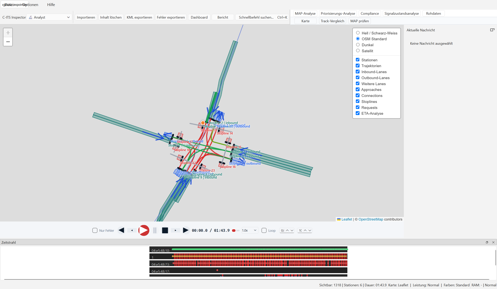
AKTUELLER SCREENSHOT 2
Schnellbefehl-Palette mit Workspace-Shortcuts und Aktionen
AKTUELLER SCREENSHOT 3
ETA-Analyse mit Request-Auswahl, Kennzahlen und Ereignistabelle
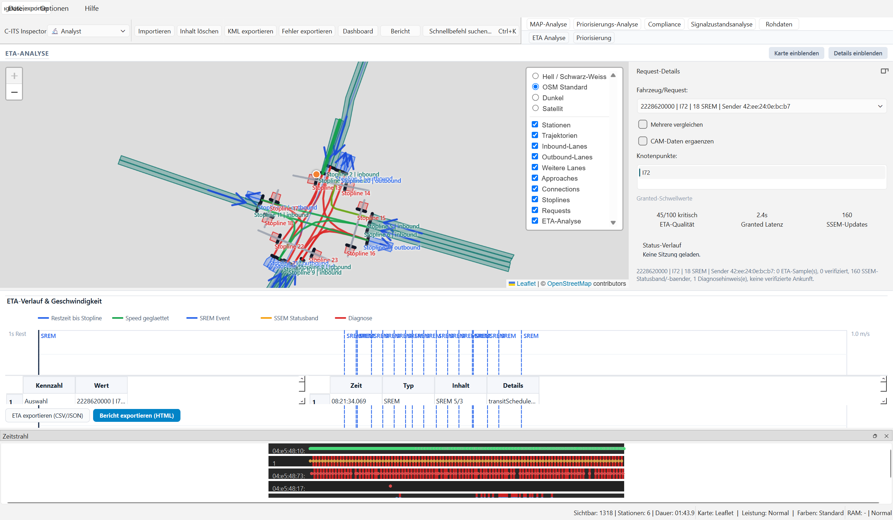
AKTUELLER SCREENSHOT 4
Rohdaten-Workspace mit Tabelle und Detail-Inspektor
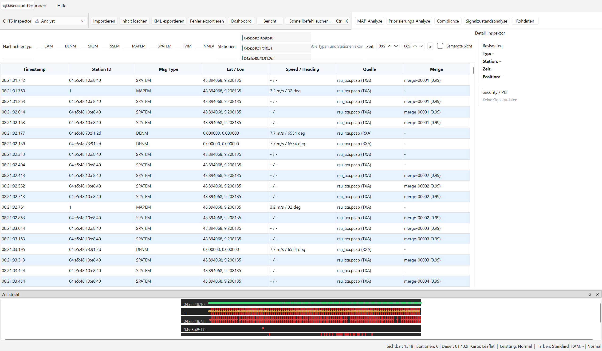
Karten-Ausschnitte aus Beispieldaten
Fuer Analyse und Praesentation sind reine Kartenausschnitte oft besser
geeignet als Vollfenster-Screenshots. Die folgenden Bilder zeigen echte
Beispieldaten bei maximaler Zoomstufe auf den jeweiligen Knotenpunkt.
AKTUELLER SCREENSHOT 7
PCAP-Beispieldaten, Zoom 19 auf MAPEM-Knotenpunkt 52.427970 / 13.526802
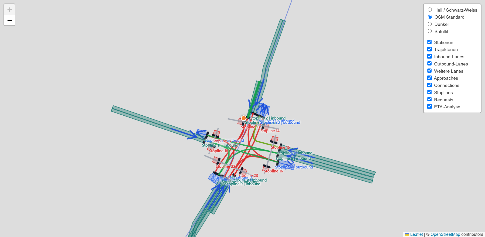
AKTUELLER SCREENSHOT 6
MAP-XML-Beispieldaten, Zoom 19 auf Knotenpunkt 49.2034845 / 8.1241752
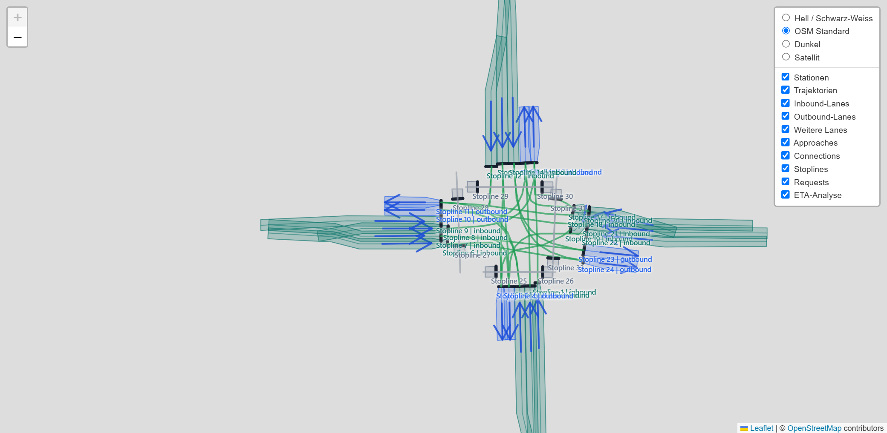
Systemvoraussetzungen
| Komponente | Mindestanforderung |
|---|
| Betriebssystem | Windows 10 oder Windows 11 |
| Programmdatei | C-ITS-Inspector.exe |
| Speicherplatz | Ausreichend Platz fuer PCAP-/XML-Dateien, Exporte und Diagnoseberichte |
| RAM | 4 GB empfohlen (große Captures) |
| Internetverbindung | Für Online-Kartenkacheln und optionale Schema-Updates |
| Optional | Wireshark / TShark fuer erweiterte Decoderabdeckung |
Hinweis
Fuer die normale EXE-Nutzung muessen Python, PyQt oder Python-Pakete
nicht separat installiert werden. Die App bringt die benoetigte Laufzeit
im bereitgestellten EXE-Paket mit.
Anwendung starten
- Den bereitgestellten Programmordner lokal ablegen, z. B. im Programme- oder Projektordner.
C-ITS-Inspector.exe per Doppelklick starten.- Falls Windows SmartScreen oder eine Unternehmensrichtlinie nachfragt, die Ausfuehrung gemaess interner Freigabe bestaetigen.
- Mit Importieren eine oder mehrere Capture- oder MAP-XML-Dateien auswaehlen oder Dateien per Drag & Drop in das Fenster ziehen.
Tipp
Die Funktion Letzte Sitzung oeffnet die zuletzt erfolgreich
geladenen Dateien erneut, sofern sie noch am gleichen Speicherort liegen.
Wireshark-Start-Hinweis
Beim ersten Start der App erscheint ein Hinweisfenster, das darauf aufmerksam macht, dass das Parsen von PCAP-Dateien erheblich schneller erfolgt, wenn Wireshark (bzw. tshark) im Hintergrund geöffnet oder im System-Pfad installiert ist. Dieses Hinweisfenster enthält ein Kontrollkästchen („Diesen Hinweis nicht mehr anzeigen“). Wird dieses aktiviert, bleibt das Hinweisfenster bei künftigen Starts deaktiviert.
START-HINWEIS SCREENSHOT
Hinweisdialog beim Programmstart zur Wireshark-Optimierung
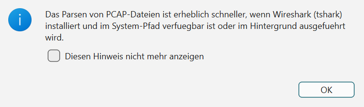
Fensteraufbau
Das Hauptfenster gliedert sich in sechs funktionale Bereiche:
SCREENSHOT 1
Gesamtansicht des Hauptfensters nach dem Laden einer PCAP-Datei
| Bereich | Position | Funktion |
|---|
| Werkzeugleiste | Ganz oben | Datei laden, Exporte, Diagnose, Karte, Schemas, Dashboard, Farbmodus und Schnellbefehl |
| Workspace-Tabs | Unter der Toolbar | Karte, ETA Analyse, Priorisierung und Rohdaten |
| Kartenbereich | Mitte links | Leaflet-Karte mit Layer-Control, Stationen, Trajektorien und Infrastruktur-Layern |
| Seitlicher Inspektor | Rechts | Aktuelle Nachricht, Request-Details, Priorisierungsfehler oder Detail-Inspektor je Workspace |
| Wiedergabesteuerung | Unten | Problemstellenmodus, Zeitachse, Play/Pause/Stop, Geschwindigkeit |
| Statusleiste | Ganz unten | Sichtbare Nachrichten, Stationen, Dauer, Kartenbackend, Leistung, RAM und Diagnose |
Statistik-Dashboard
Die Schaltfläche Dashboard öffnet ein separates
Statistikfenster. Es fasst die geladene Sitzung zusammen und bietet Tabs
für Überblick, Nachrichtenraten sowie Speed/Heading.
DASHBOARD
Statistik-Dashboard über der geladenen Kartenansicht
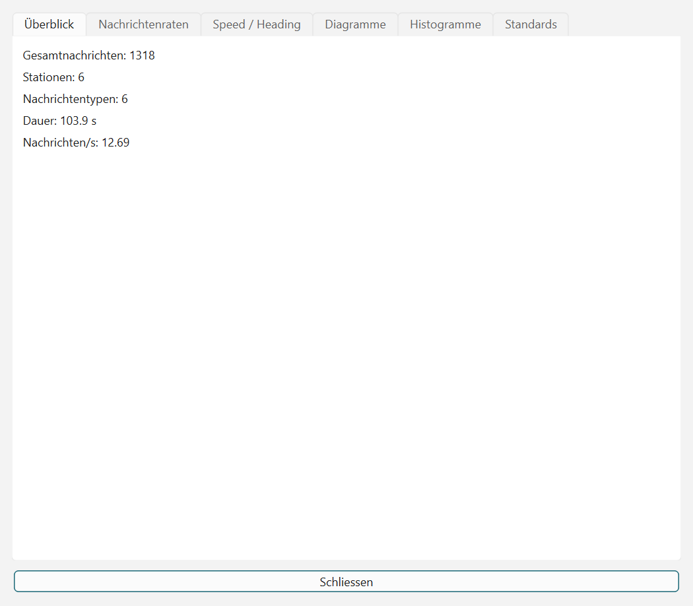
Statusleiste und Sitzungsstatus
Der aktuelle UI-Stand zeigt Sitzungskennzahlen dauerhaft in der unteren
Statusleiste. Dort stehen geladene Nachrichten, Stationen, Dauer,
sichtbare Datensätze, Kartenbackend, Leistungsmodus, Farbmodus, RAM-Anzeige und
der Diagnosezugang.
SCREENSHOT 3
Status- und Wiedergabebereich nach dem Laden einer Sitzung
| Anzeige | Bedeutung |
|---|
| Geladen | Gesamtzahl dekodierter Nachrichten, Stationen und Sitzungsdauer |
| Sichtbar | Nachrichten und Stationen nach aktuellem Filter |
| Karte | Aktives Kartenbackend, z. B. Leaflet |
| Leistung | Aktiver Render-/Performance-Modus |
| Farben | Aktiver Standard- oder Rot/Gruen-Farbmodus |
| RAM | Aktueller Speicherstatus, falls verfügbar |
Die frühere Kopfzusammenfassung wurde durch die Workspace-Leiste und die
permanente Statuszeile ersetzt. Dadurch bleibt im Hauptbereich mehr Platz
für Karte, Analyse und Rohdaten.
Filter-Zeile
Die Filter-Zeile steuert, welche Nachrichten in Karte, Tabelle und
Wiedergabe angezeigt werden.
SCREENSHOT 4
Filter-Zeile mit aktivierten Nachrichtentypen und ausgewählten Stationen
Nachrichtentyp-Filter
Jeder Nachrichtentyp hat eine eigene Checkbox. Deaktivierte Typen werden
vollständig aus Tabelle, Karte und Wiedergabe ausgeschlossen.
| Checkbox | Enthaltene Nachrichten |
|---|
| CAM | Cooperative Awareness Messages – Fahrzeugposition und -status |
| DENM | Decentralized Environmental Notification Messages – Ereignisse |
| SREM | Signal Request Messages – Priorisierungsanfragen von Fahrzeugen |
| SSEM | Signal Status Messages – Antworten der Kreuzung auf SREM |
| MAPEM | MAP Extended Messages – Kreuzungsgeometrie und Fahrspurdaten |
| SPATEM | Signal Phase and Timing Messages – Ampelzustand und Prognose |
| NMEA | GPS/GNSS-Rohdaten (NMEA 0183) |
Stations-Filter
Die Stationsliste zeigt alle in der Sitzung enthaltenen Stations-IDs.
Durch Klick (Mehrfachauswahl mit Ctrl+Klick oder Shift+Klick)
werden nur die gewählten Stationen angezeigt. Keine Auswahl = alle Stationen aktiv.
Schnelle Auswahlwechsel werden gebuendelt, damit die Karte nicht fuer jeden einzelnen Klick
neu aufgebaut werden muss.
Gemergte Sicht
Aktiviert die Option „Gemergte Sicht", werden
Mehrfachbeobachtungen derselben physischen Nachricht (TXA- und RXA-Capture)
zusammengeführt und nur einmal kanonisch dargestellt.
Die Merge-Konfidenz ist in der Tabellenspalte Merge sichtbar.
Tipp
Wenn TXA- und RXA-Dateien gleichzeitig geladen sind, empfiehlt sich die
Gemergte Sicht, um Duplikate in der Positionsdarstellung zu vermeiden.
Kartenansicht
Die Karte basiert auf Leaflet und zeigt die Positionen aller gefilterten
Nachrichten als farbige Marker. Während der Wiedergabe bewegen sich die
Fahrzeugpositionen in Echtzeit.
MAP-XML-Sitzungen werden ohne Luftbild-Overlay als technischer Lageplan
gezeichnet. Die App nutzt die lane-lokalen NodeXY-Deltas aus
IntersectionGeometry, zeichnet Fahrstreifenflaechen,
Stoplines, Ingress-/Outbound-Approaches und Connections und zoomt beim
Import automatisch auf die Ausdehnung der geladenen Kreuzung.
SCREENSHOT 5
Interaktive Karte mit Fahrzeug-Markern und Trajektorien während der Wiedergabe
Karteninteraktion
| Aktion | Funktion |
|---|
| Linksklick + Ziehen | Karte verschieben (Pan) |
| Mausrad | Rein-/Rauszoomen |
| Klick auf Marker | Zugehörige Nachricht in der Tabelle markieren und Details anzeigen |
| Layer-Umschalter (rechts oben) | Kachel-Layer wechseln (OpenStreetMap, Satellit etc.) |
Marker-Farben nach Nachrichtentyp
| Farbe | Typ |
|---|
| Blau | CAM |
| Rot | DENM |
| Orange | SREM |
| Cyan | SSEM |
| Grün | MAPEM |
| Magenta | SPATEM |
| Dunkelrot | NMEA |
Marker-Bewegung & Interpolation
Um Fahrzeugbewegungen auf der Karte möglichst flüssig und realitätsnah darzustellen, interpoliert die Kartenkomponente Bewegungsabläufe zwischen aufeinanderfolgenden GNSS-Meldungen (CAM oder NMEA). Anstatt dass die Marker sprunghaft von einer Position zur nächsten springen, bewegen sie sich mittels einer nicht-linearen Easing-Funktion weich über die Fahrbahn. Die Animationsdauer wird hierbei dynamisch an die tatsächlichen Zeitabstände der eintreffenden Positionsmeldungen angepasst.
Nachrichtentabelle
Der Workspace Rohdaten listet alle gefilterten Nachrichten
chronologisch auf. Ein Klick auf eine Zeile füllt den Detail-Inspektor
rechts mit Basisdaten, dekodierten Feldern und Security-/PKI-Hinweisen.
SCREENSHOT 6
Rohdaten-Workspace mit Nachrichtentabelle und Detail-Inspektor
Spalten
| Spalte | Inhalt | Rohdaten-Workspace |
|---|
| Timestamp | Zeitstempel der Nachricht (ISO-8601) | ✓ sichtbar |
| Station ID | Eindeutige Stations-ID des Senders | ✓ sichtbar |
| Msg Type | Nachrichtentyp (CAM, DENM, …) | ✓ sichtbar |
| Lat / Lon | Geografische Koordinaten | ✗ ausgeblendet |
| Speed / Heading | Geschwindigkeit (km/h) und Fahrtrichtung (°) | ✓ sichtbar |
| Quelle | Quelldateiname und Rolle (TXA/RXA) | ✗ ausgeblendet |
| Merge | Merge-Gruppe und Konfidenz (bei gemergter Sicht) | ✗ ausgeblendet |
Tabelle maximieren
Mit der Schaltfläche „Tabelle maximieren" oberhalb der Tabelle
wird der vertikale Splitter so verschoben, dass die Tabelle mehr Platz erhält.
Nützlich auf kleinen Bildschirmen oder bei vielen Nachrichten.
Hinweis
Die aktuell abgespielte Nachricht wird während der Wiedergabe automatisch
in der Tabelle markiert (blaue Hervorhebung).
Zweistufiges Workspace-Konzept
Um die gestiegene Funktionsvielfalt übersichtlich zu strukturieren, verwendet die Anwendung eine zweistufige Workspace-Navigation. Diese teilt die Benutzeroberfläche in thematische Hauptgruppen (Obergruppen) und zugehörige Arbeitsbereiche (Unter-Tabs) auf. Alle Workspaces synchronisieren die geladenen V2X-Mitschnittdaten sowie die zeitliche Wiedergabeposition.
Struktur der Obergruppen
| Hauptgruppe | Enthaltene Workspaces / Unter-Tabs | Fokus |
|---|
| MAP-Analyse |
Karte, Track-Vergleich, MAP prüfen |
Geometrische Auswertung der Knotenpunkte, Abgleich von Empfangsspuren (RSU vs. Fahrzeug) sowie integrierte MAP/SPAT-Konformitätsprüfung (C-Roads). |
| Priorisierungs-Analyse |
ETA Analyse, Priorisierung |
Detailuntersuchung von ÖPNV- und Einsatzfahrzeug-Anforderungen an Lichtsignalanlagen (SREM/SSEM). |
| Compliance |
PKI Analyse, Analyse Ergebnisse |
Kryptografische Signaturprüfung und detaillierte Standard-Konformitätstests (z. B. nach C-Roads). |
| Signalzustandsanalyse |
Dashboard, Detailansicht, Qualitätsansicht, Signalzeitenplan (Gantt), Prognosehorizont |
Statistische Qualitätsbewertung der Signalübergangsvorhersagen, visueller Signalzeitenplan (Gantt) mit SRM-Priorisierung und Stabilitätsdiagramm für den Prognosehorizont. |
| Rohdaten |
Rohdaten |
Chronologische Paketliste und vollständiger ASN.1-Decoder-Baum mit Hex-Ansicht. |
Navigation & Bedienung
- Schnelles Umschalten: Die Obergruppen sind über die obere Reihe der Tab-Leiste erreichbar. Die zugeordneten Unter-Tabs erscheinen dynamisch in der zweiten Reihe.
- Arbeitsstatus-Speicherung: Die App merkt sich pro Hauptgruppe den zuletzt ausgewählten Unter-Tab. Beim Wechsel der Obergruppe wird dieser Unter-Tab automatisch wieder fokussiert, um den Arbeitsfluss nicht zu unterbrechen.
- Tastatur-Shortcuts: Der Wechsel der Workspaces kann effizient über Tastenkürzel wie Ctrl+1 bis Ctrl+5 gesteuert werden.
Detail-Inspektor
Der Detail-Inspektor ist in allen Workspaces verfügbar und zeigt die
vollständige Dekodierung der zuletzt ausgewählten Nachricht. Er besteht
aus drei Bereichen: Decode-Tree, Hex/Raw-Ansicht und Security/PKI.
SCREENSHOT 7
Inspektor mit Decode-Tree, Hex-Dump und PKI-Bereich
Decode-Tree
Der dekodierte Nachrichteninhalt wird als hierarchischer Baum dargestellt.
Jeder Knoten zeigt Feldname, Wert, Datentyp und Raw-Hex an. Über das
Suchfeld lassen sich Felder per Teilzeichenkette (case-insensitiv) filtern.
Klick auf einen Knoten öffnet/schließt dessen Kinder; ein Doppelklick
kopiert den Wert in die Zwischenablage.
Hex-/Raw-Ansicht
Unter dem Baum befindet sich ein Hex-Dump im Monospace-Format
(Offset + Hex + ASCII). Kopier-Buttons erlauben das Übernehmen der
Rohbytes als Hex-String oder Base64.
Inspektor-Trigger
Über die Trigger-Einstellung lässt sich steuern, wann der Inspektor
eine Nachricht lädt. Die Einstellung wird in QSettings persistiert.
| Modus | Beschreibung |
|---|
| Klick | Nachricht wird beim Klick auf Tabelle oder Marker geladen |
| Pause-Auto | Bei Wiedergabe-Pause wird die aktuelle Nachricht automatisch angezeigt |
| Manuell (Ctrl+I) | Nur bei explizitem Tastaturkürzel oder Button-Klick |
| Aus | Inspektor bleibt leer; keine automatische Nachrichtenladung |
Tastaturnavigation in der Nachrichtentabelle
Im Rohdaten-Workspace können die Pfeiltasten (↑/↓) genutzt werden,
um durch die Nachrichtentabelle zu navigieren. Der Inspektor aktualisiert
sich entsprechend der gewählten Zeile (sofern der Trigger-Modus dies erlaubt).
Workspace „Priorisierung"
Der Priorisierungs-Workspace aggregiert Karte, Infrastruktur-Layer und
Fehlerpanel zur aktuellen Wiedergabeposition. Rechts lassen sich Fehler
nach Schweregrad und Kreuzung filtern.
SCREENSHOT 8
Priorisierungs-Workspace mit Kartenansicht und Fehlerpanel
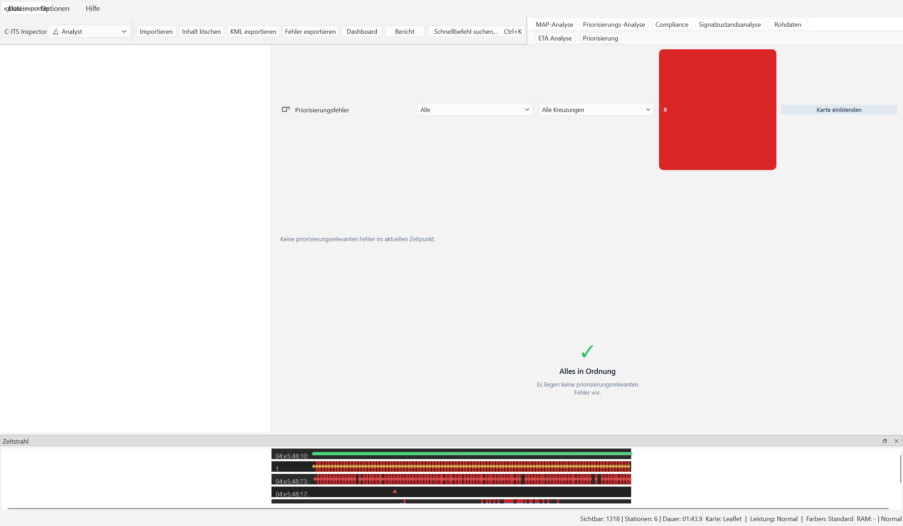
Kreuzungstabelle
| Spalte | Inhalt |
|---|
| Intersection | Kreuzungs-ID |
| Revision | MAP-Revisionsnummer |
| Signalgruppen | Anzahl aktiver Signalgruppen |
| Prognose | Konfidenz der Phasenprognose (high/medium/low) |
| 30s Timeline | Symbolische 30-Sekunden-Vorschau der Signalphasen |
Timeline-Legende
| Symbol | Phase |
|---|
G | Freigabe (protected-Movement-Allowed) |
R | Halt (stop-And-Remain) |
C | Clearance (protected-clearance) |
P | Vorlauf (pre-Movement) |
! | Konflikt (caution-Conflicting-Traffic) |
? | Unbekannte Phase |
Request-Tabelle
| Spalte | Inhalt |
|---|
| Request | Request-ID |
| Station | Anfragende Station |
| Prio | Prioritätsstufe (importanceLevel) |
| Status | Betriebsstatus (pending / acknowledged / granted / rejected / timeout) |
| Lanes | Ein- und Ausfahrtsspuren |
Request-Farblegende
Die Statusfarben in der Tabelle und auf der Karte:
| Farbe | Status |
|---|
| Blau | pending |
| Gelb | acknowledged |
| Grün | granted |
| Rot | rejected |
| Dunkelrot | timeout |
Tab „ETA Analyse"
Der ETA-Tab stellt die Restzeit aus dem SREM-Feld
expectedTimeOfArrival grafisch dar – synchronisiert mit
der Wiedergabeposition. Die Auswahl ist fahrzeugzentriert und gruppiert
mehrere SREM-Updates eines Fahrzeugs in einem Track.
SCREENSHOT 9
ETA-Analyse-Workspace mit Request-Auswahl, Kennzahlen und Ereignistabelle
Graphelemente
| Element | Farbe | Bedeutung |
|---|
| ETA-Kurve | Blau | Restzeit bis Haltelinie aus SREM expectedTimeOfArrival |
| Geschwindigkeitskurve | Grün | Geglättete CAM-Fahrzeuggeschwindigkeit, wenn CAM-Ergänzung aktiv ist |
| SREM-Ereignislinien | Vertikal | Zeitpunkte von Priorisierungsanfragen |
| SSEM-Statusbänder | Farbig | Status-Intervalle der Kreuzungsantwort |
| Diagnosemarker | Symbole | ETA-Sprung, fehlendes SSEM, spätes granted, Sender-MAC-Fallback, Stopline-Passage ohne granted |
Die Dropdown-Liste „Fahrzeug/Request" erlaubt die Auswahl
des Fahrzeugs. Die Knotenpunktliste filtert mehrere Intersection-IDs.
Die Checkbox „CAM-Daten ergänzen" aktiviert zusätzliche
CAM-Geschwindigkeit und Stopline-Verifikation; die ETA selbst bleibt
weiterhin die SREM-ETA. transitSchedule beschreibt
Verfrühung oder Verspätung zum Fahrplan und wird nicht als ETA genutzt.
Workspace „Signalzustandsanalyse“
Der Workspace Signalzustandsanalyse (vormals Signalzustandsanalyse) dient der umfassenden visuellen und statistischen Auswertung von Signal Phase and Timing (SPAT) Nachrichten. Der Workspace gliedert sich in fünf spezialisierte Unter-Tabs, die über eine gemeinsame Filter-Seitenleiste gesteuert werden.
SCREENSHOT 11
Workspace Signalzustandsanalyse - Dashboard zur Vorhersagequalität
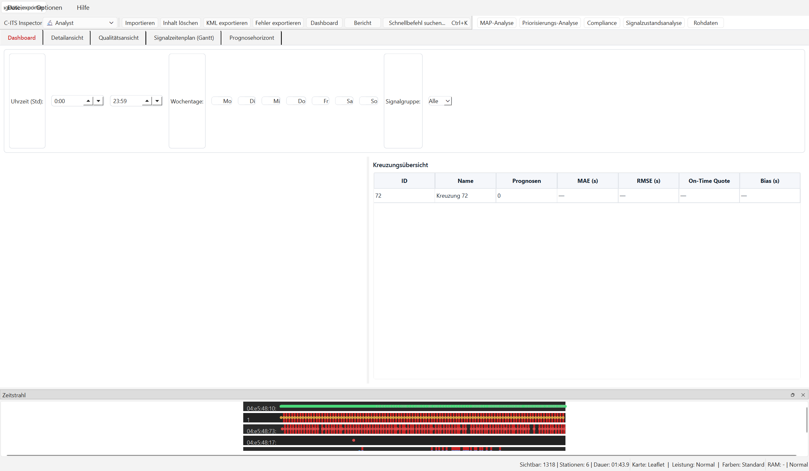
1. Dashboard, Detailansicht und Qualitätsansicht
Diese drei Unter-Tabs bewerten die statistische Genauigkeit der Phasenwechselprognosen der RSU (LikelyTime / MinEndTime im Vergleich zur Ground Truth):
- Dashboard: Übersicht aller Kreuzungen mit MAE (mittlerer absoluter Fehler), RMSE, Bias und der On-Time-Quote.
- Detailansicht: Visualisierung des Prognosefehlers über die Zeit, Histogramm der Fehlerverteilung und Soll/Ist-Scatterplot für eine gewählte Kreuzung und Signalgruppe.
- Qualitätsansicht: Prozentuale Datenverfügbarkeit (gültig, ungültig, fehlend) im Kreisdiagramm und MAE-Stundenprofile zur Untersuchung von Tageszeiteinflüssen.
2. Signalzeitenplan (Gantt)
Der Unter-Tab Signalzeitenplan (Gantt) stellt den zeitlichen Verlauf der Ampelphasen aller Signalgruppen (SG) der ausgewählten Kreuzung als horizontale, farbkodierte Balken dar.
SCREENSHOT 12
Visualisierung der Signalzustände aller Signalgruppen über der Zeit inkl. SRM-Priorisierungen
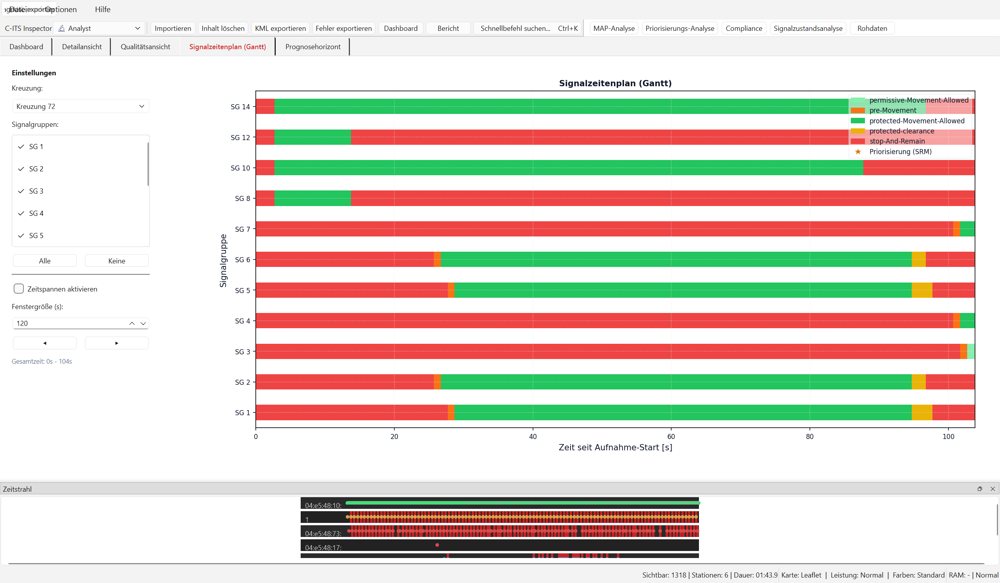
- Farbkodierung der Ampelphasen:
- Grün (protected-Movement-Allowed): Freigabe.
- Rot (stop-And-Remain): Halt.
- Hellgrün (permissive-Movement-Allowed): Bedingte Freigabe.
- Gelb (pre-Movement): Vorlauf / Gelb.
- Rot/Gelb (protected-clearance): Räumzeit.
- Rot gestrichelt (caution-Conflicting-Traffic): Konfliktsignalisierung.
- SRM-Priorisierungsanforderung: Wenn ein ÖPNV- oder Einsatzfahrzeug eine Priorisierung anfordert (SREM), wird dies direkt über dem Balken des betroffenen Signalgebers als blaues/grünes Pfeilsymbol oder Marker über den entsprechenden Zeitraum gezeichnet. Dies macht die Kopplung zwischen Fahrzeuganforderung und Schaltung der Signalgruppe unmittelbar sichtbar.
3. Prognosehorizont
Der Unter-Tab Prognosehorizont visualisiert die Stabilität der prognostizierten Phasen-Endzeiten (LikelyTime) über der Zeit seit Aufnahmestart.
SCREENSHOT 13
Darstellung des Prognosehorizonts (LikelyTime minus Sendezeit) zur Stabilitätsprüfung
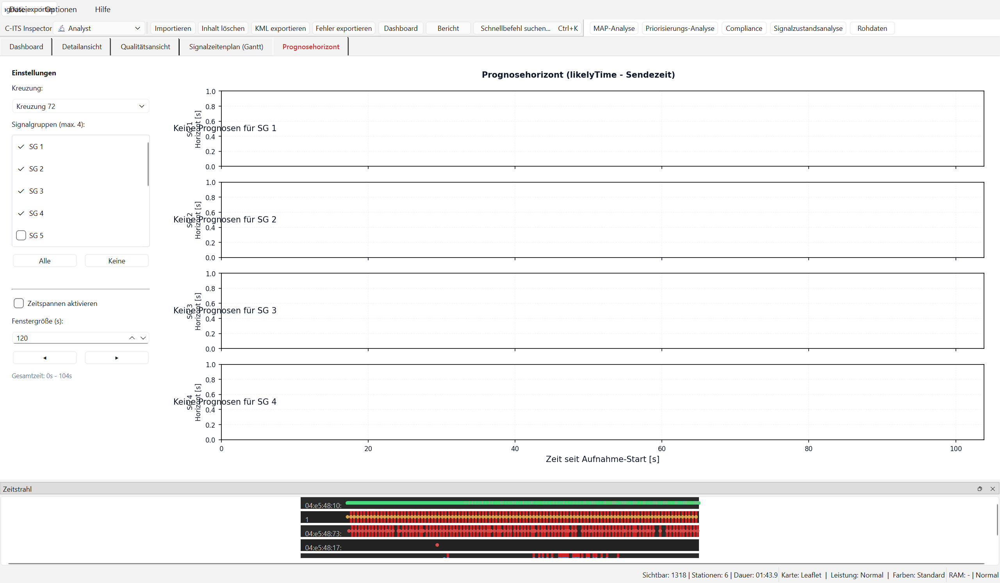
- Y-Achse: Verbleibende Restzeit bis zum Phasenwechsel ($T_{likely} - T_{send}$) in Sekunden.
- X-Achse: Zeit seit Aufnahmestart in Sekunden.
- Interpretation: Ein gleichmäßig linear abfallender Graph deutet auf eine stabile und verlässliche Prognose hin. Treppenstufen oder abrupte Sprünge zeigen an, dass das Steuergerät die Prognose dynamisch korrigieren musste.
4. Filterung & Performance-Steuerung
Die Steuerung erfolgt über die linke Seitenleiste:
- Zweistufiger Filter: Zuerst wird die korrekte Kreuzungs-ID ausgewählt. Darunter listet die App alle zugeordneten Signalgruppen auf, die einzeln über Kontrollkästchen ein- oder ausgeblendet werden können.
- Zeitfenster-Schnitt (Time Slices): Um die Übersichtlichkeit und Rendergeschwindigkeit bei großen Aufzeichnungen zu maximieren, können die Daten in Zeitfenster zwischen 60 und 600 Sekunden geschnitten werden. Mit den Pfeiltasten (◀ und ▶) lässt sich komfortabel durch die Segmente blättern.
Priorisierungsfehler-Panel
Das Panel im Workspace Priorisierung listet automatisch erkannte
Priorisierungsfehler auf. Die rote Badge zeigt die Anzahl der aktuell
passenden Fehler; wenn im aktuellen Zeitpunkt kein Fehler aktiv ist,
zeigt das Panel einen leeren Zustand mit Icon und Hinweistext.
SCREENSHOT 10
Priorisierungsfehler-Panel mit Filter für Schweregrad und Kreuzung
Fehlerfilter
| Filter | Anzeige |
|---|
| Alle | Alle erkannten Priorisierungsfehler |
| Nur kritisch | Nur Fehler mit Schweregrad critical |
| Aktuelle Kreuzung | Fehler nur für die aktuell sichtbare Kreuzung |
Der zweite Dropdown „Kreuzung" grenzt die Liste auf eine
spezifische Kreuzungs-ID ein.
Navigation über Fehler
Ein Klick auf einen Eintrag in der Fehlerliste springt die Wiedergabe
automatisch zum Zeitpunkt des Fehlers und markiert die betroffene Nachricht
in der Rohdaten-Tabelle. Alternativ können die Zurück-/Weiter-Schaltflächen
in der Wiedergabesteuerung genutzt werden.
Leere Fehlerliste
Wenn im aktuellen Zeitpunkt kein Fehler aktiv ist oder der Filter zu
restriktiv eingestellt ist, zeigt das Panel einen leeren Zustand mit
Icon und Hinweistext. Über den Button „Filter zurücksetzen"
können alle Filter auf den Standardzustand zurückgesetzt werden.
Panel ein-/ausklappen
Mit der Schaltfläche „Einklappen" kann das Panel ausgeblendet
werden, um der Karte mehr Breite zu geben.
Wiedergabesteuerung
Die Wiedergabesteuerung am unteren Fensterrand steuert die zeitgesteuerte
Simulation der V2X-Nachrichtenfolge.
SCREENSHOT 11
Wiedergabesteuerung während aktiver Wiedergabe
| Element | Funktion |
|---|
| Nur Fehler | Wenn aktiviert, springt die Wiedergabe nur zu Zeitpunkten mit erkannten Priorisierungsfehlern |
| Zurück / Weiter | Springt zum vorherigen bzw. nächsten relevanten Zeitpunkt |
| Play | Startet oder setzt die Wiedergabe fort |
| Pause | Hält die Wiedergabe an (Position bleibt erhalten) |
| Stop | Beendet die Wiedergabe und setzt auf den Anfang zurück |
| Zeitachsen-Schieberegler | Manuelle Positionierung (Ziehen oder Klicken) |
| Geschwindigkeit | Wiedergabegeschwindigkeit: 0.1×, 0.5×, 1×, 2×, 5×, 10× |
| Zeitanzeige | Aktuelle Position und Gesamtdauer im Format MM:SS.t / MM:SS.t |
Tipp
Für eine detaillierte Analyse empfiehlt sich zunächst die Geschwindigkeit
1× oder 0.5×. Zur schnellen Übersicht
eignet sich 5× oder 10×.
Map-Stabilität
Die Kartenanzeige nutzt eine eingebettete Online-Karte. Mehrere
Schutzmechanismen verhindern Aussetzer und Freeze-Zustaende waehrend
laengerer Sitzungen:
| Mechanismus | Wirkung |
|---|
| Interaktion schuetzen |
Waehrend Pan, Zoom oder Fenster-Resize werden Kartenaktualisierungen
kurz gebuendelt. Danach springt die Karte automatisch auf den
aktuellen Wiedergabezustand. |
| Hintergrundberechnung |
Aufwendige Kartenberechnungen laufen im Hintergrund, damit die
Oberflaeche bedienbar bleibt. |
| Haenger erkennen |
Antwortet die Karte laenger nicht, wird der Zustand erkannt und
automatisch behandelt. |
| Auto-Recovery |
Bei wiederholten Kartenproblemen laedt die App die Kartenansicht
neu und stellt den letzten bekannten Zustand wieder her. |
| Resize-Schutz |
Beim Maximieren oder Bildschirm-Wechsel werden Aktualisierungen
gepuffert, damit die Karte nicht einfriert. |
Diagnose
Bei wiederholten Kartenproblemen Diagnose exportieren
ausfuehren und den Bericht zusammen mit einer kurzen Beschreibung des
Problems weitergeben.
Manuelles Eingreifen
Sollte die Map dennoch dauerhaft leer bleiben, hilft folgender Ablauf:
- Auf Schonend-Performance-Modus wechseln.
- Wiedergabe stoppen und 5 s warten.
- Anwendung neu starten — die zuletzt geladene Sitzung ist über
„Letzte Sitzung" wiederherstellbar.
Arbeitsablauf: PCAP-Datei laden
Methode 1: Dateidialog
- Schaltfläche „Importieren" in der Werkzeugleiste klicken.
- Im Dateidialog eine oder mehrere
.pcap/.pcapng/.cap-Dateien auswählen.
- Auf „Öffnen" klicken. Der Ladebalken in der Statusleiste zeigt den Fortschritt.
- Nach erfolgreichem Laden werden Sitzungskennzahlen in der Statusleiste angezeigt; Rohdaten, Karte und Analyse-Workspaces sind gefüllt.
Methode 2: Drag & Drop
- Eine oder mehrere PCAP-Dateien im Windows-Explorer auswählen.
- Die Dateien auf das C-ITS-Inspector-Fenster ziehen und loslassen.
- Der Parse-Vorgang startet automatisch.
Methode 3: Letzte Sitzung
- Schaltfläche „Letzte Sitzung" klicken.
- Die zuletzt geladenen Dateien werden automatisch erneut geparst.
Hinweis: Mehrere Dateien
Werden mehrere Dateien geladen (z. B. TXA + RXA eines Feldtests),
sollte die Gemergte Sicht aktiviert werden, um
Doppel-Darstellungen zu vermeiden.
MAP-XML als reine Karten-Session
- Eine oder mehrere MAP-
.xml-Dateien ueber Importieren oder per Drag & Drop oeffnen.
- Die Anwendung erzeugt daraus synthetische MAPEM-Nachrichten; PCAP-Daten sind dafuer nicht erforderlich.
- Enthaelt eine XML-Datei mehrere Kreuzungen, erscheinen diese als getrennte Stationen und Layer-Gruppen.
- Im Workspace Karte Fahrstreifenflaechen, Referenzpunkte, Ingress-/Outbound-Approaches, Connections und Stoplines pruefen.
- Die Karte zoomt automatisch auf die MAP-Ausdehnung. Wenn alte Filter alle neuen Nachrichten ausblenden wuerden, setzt die App die Filter fuer die neue Sitzung zurueck.
Laden abbrechen
Ein laufender Parse-Vorgang kann jederzeit mit „Laden abbrechen"
unterbrochen werden. Bereits geparste Pakete werden verworfen.
Arbeitsablauf: MAP prüfen
Die C-Roads-orientierte Konformitätsprüfung für MAP/SPAT-Nachrichten ist nun nahtlos als Unter-Tab direkt in den Haupt-Workspace MAP-Analyse integriert.
- MAP-XML oder eine PCAP-Sitzung mit MAPEM/SPATEM laden.
- In den Haupt-Workspace MAP-Analyse wechseln (über die Tab-Leiste oder Ctrl+1).
- Den Unter-Tab MAP prüfen anklicken.
- Die Prüfung läuft vollautomatisch im Hintergrund. Die Ergebnisliste zeigt Fehler, Warnungen und Hinweise nach Schweregrad sortiert an.
AKTUELLER SCREENSHOT 5
Integrierte MAP/SPAT-Prüfung mit C-Roads-Handbuchregeln und Exportaktionen
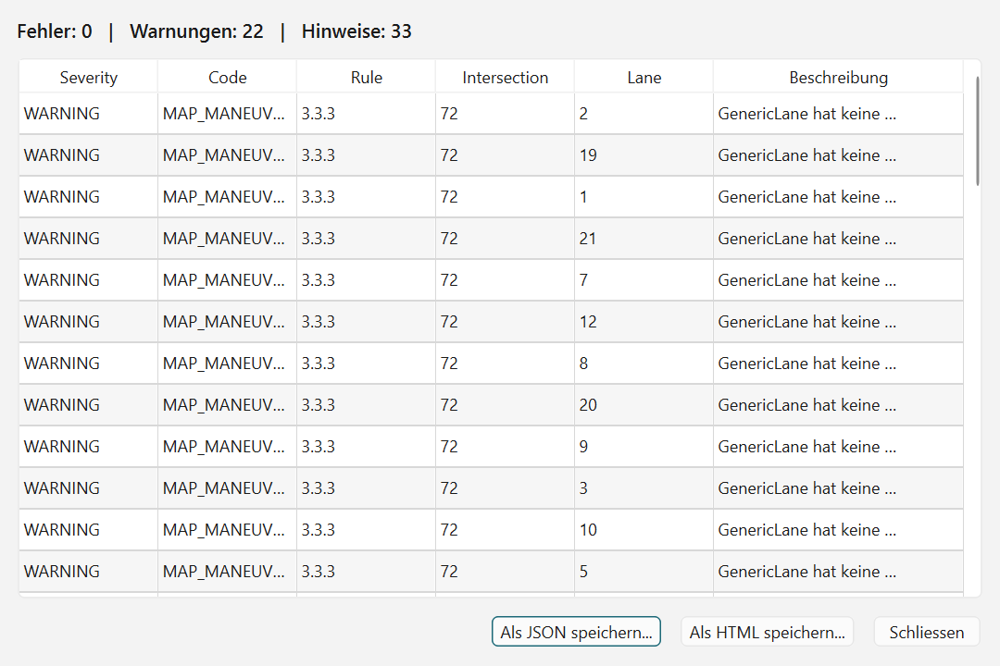
Gepruefte C-Roads-Punkte
| Bereich | Pruefung |
|---|
| Intersection | Numerische intersectionId, vorhandene revision und gueltiger refPoint |
| LaneSet | Nicht leer, eindeutige laneID, mindestens zwei NodeList-Punkte je Lane |
| Connections | connectsTo verweist auf bekannte Lanes; signalGroup ist vorhanden |
| SPATEM | Intersection-State, Revision, Signalgruppen und Event-State sind auswertbar |
| MAP/SPAT-Abgleich | Revisionen je Kreuzung stimmen ueberein; MAP-Signalgruppen sind in SPATEM auffindbar |
Hinweis
In einer reinen MAP-Session ohne SPATEM meldet der Check fehlende SPATEM-Daten als Hinweis, nicht als Fehler.
Arbeitsablauf: Wiedergabe nutzen
- PCAP-Datei laden (siehe oben).
- Filter nach Bedarf einstellen (z. B. nur CAM + SREM).
- Play drücken – Fahrzeugpositionen bewegen sich auf der Karte.
- Geschwindigkeit anpassen: Für Überblick 5×, für Detailanalyse 0.5×.
- Zum gewünschten Zeitpunkt per Schieberegler navigieren.
- Workspace Rohdaten öffnen und eine interessante Nachricht anklicken; der Detail-Inspektor zeigt die dekodierten Felder.
- Workspace ETA Analyse oder Priorisierung für Request-Verlauf, Kreuzungsbezug und Fehlerkontext öffnen.
Problem-Replay-Modus
Checkbox „Nur Problemstellen" aktivieren: Die Wiedergabe
überspringt fehlerfreie Zeitbereiche automatisch und springt direkt zu
erkannten Priorisierungsproblemen. Ideal für schnelle Diagnosen in langen Captures.
Arbeitsablauf: ETA-Analyse
- PCAP mit SREM/SSEM und CAM laden.
- Tab „ETA Analyse" klicken.
- Im Dropdown „Fahrzeug/Request" das gewünschte Fahrzeug auswählen.
- In der Knotenpunktliste eine oder mehrere Intersection-IDs auswählen.
- Bei Bedarf „CAM-Daten ergänzen" aktivieren, um geglättete Geschwindigkeit und Stopline-Verifikation einzublenden.
- Graph zeigt: SREM-ETA-Kurve, optionale Geschwindigkeitskurve, vertikale SREM-Linien und farbige SSEM-Bänder; der Rot/Gruen-Farbmodus wird hier ebenfalls angewendet.
- Diagnosemarker identifizieren Problemstellen (ETA-Sprünge, fehlendes granted, verspätetes granted, Sender-MAC-Fallback usw.).
- Wiedergabe parallel laufen lassen – die Cursor-Position im Graphen bewegt sich mit.
Interpretation
Eine gleichmäßig fallende SREM-ETA-Kurve ohne Sprünge bei konsistent
hoher Fahrzeuggeschwindigkeit und einem frühen granted-Band
ist das Zeichen einer funktionierenden Priorisierung. Für ÖPNV gilt
granted ab mehr als 3,0 s als spät, für
EmergencyVehicle ab mehr als 2,0 s.
Arbeitsablauf: SPAT-Prognosequalität analysieren
Dieses Verfahren dient zur Ermittlung der zeitlichen Genauigkeit von Signalphasen-Vorhersagen der RSU.
- Eine PCAP-Datei mit MAPEM- und SPATEM-Inhalt (oder eine MAP-XML-Datei zusammen mit einer passenden SPATEM-PCAP-Datei) über Importieren oder Drag & Drop laden.
- Den Haupt-Workspace Signalzustandsanalyse über die obere Tab-Leiste oder per Ctrl+K auswählen. Die Ansicht öffnet sich standardmäßig auf dem Dashboard.
- Die Filter in der Kopfzeile nach Bedarf einstellen (z. B. Analysezeitraum einschränken, Nächte/Wochenenden ausschließen oder eine spezifische Signalgruppe auswählen).
- Auf der Karte die Farbcodierung der Kreuzungs-Marker prüfen. Klicken Sie auf einen Marker, um die betroffene Kreuzung in der Tabelle zu fokussieren.
- Wechseln Sie zum Tab Detailansicht. Die zuvor selektierte Kreuzung ist bereits ausgewählt. Wählen Sie die gewünschte Signalgruppe im Dropdown.
- Analysieren Sie die Diagramme:
- Der Prognosefehler-Plot zeigt die Abweichung einzelner Prognosen. Punkte innerhalb der gestrichelten roten Linien (On-Time-Fehlerschwelle, Standard: ±2s) stellen Prognoseausreißer dar.
- Das Histogramm veranschaulicht die Fehlerverteilung. Ein spitzes Maximum bei Null bedeutet exzellente Qualität. Ein verschobenes Maximum weist auf einen systematischen Fehler (Bias) hin.
- Der Scatterplot zeigt das Soll/Ist-Verhältnis. Abweichungen von der Winkelhalbierenden verdeutlichen Verzögerungen oder verfrühte Meldungen.
- Wechseln Sie zum Tab Qualitätsansicht, um die prozentuale Datenvollständigkeit (Gültig/Fehlend/Ungültig) im Kreisdiagramm und tageszeitliche MAE-Trends (Werktage vs. Wochenende) zu analysieren.
On-Time-Fehlerschwelle konfigurieren
Die Fehlerschwelle für die On-Time-Quote kann in den globalen Anwendungseinstellungen
konfiguriert werden. Sie steuert, ab wie vielen Sekunden Abweichung eine Prognose als „nicht mehr pünktlich“ gewertet wird.
Arbeitsablauf: KML exportieren
- PCAP importieren und ggf. Filter setzen (nur die zu exportierenden Typen/Stationen).
- Schaltfläche „KML exportieren" klicken.
- Zielordner im Dialog auswählen.
- Die Anwendung erzeugt pro Station eine KML-Datei (
station_<ID>.kml).
- Der aktuell gewaehlte Farbmodus wird fuer Placemarks und Trajektorien uebernommen.
- Die Dateien können direkt in Google Earth oder QGIS geöffnet werden.
KML-Inhalt
| Element | Beschreibung |
|---|
| Placemarks | Jede Nachricht als georeferenzierter Punkt mit Zeitstempel und Typ |
| LineString-Trajektorie | Verbindet alle Positionen einer Station als Linie |
| Farben | Stationsspezifische Farben für Trajektorien; typbezogene Farben für Placemarks; optional Rot/Gruen-schwache Palette |
| ASN.1-Provenienz | Verwendete Schema-Versionen im KML-Dokumentkopf |
Tipp
Die aktiven Filter (Typen, Stationen) werden beim Export berücksichtigt.
Für einen vollständigen Export alle Filter deaktivieren.
ASN.1-Schemas aktualisieren
C-ITS Inspector nutzt ASN.1-Schemadateien zur Dekodierung von ITS-PDUs
nach ETSI-Standard. Diese können auf dem neuesten Stand gehalten werden.
- Internetverbindung sicherstellen.
- Schaltfläche „ASN.1-Schemas aktualisieren" klicken.
- Die Anwendung lädt aktualisierte Schemadateien aus den
offiziellen ETSI Forge GitLab-Repositorien.
- Nach dem Update sollte die Sitzung neu geladen werden, damit neue Felder dekodiert werden.
Quellen
| Modul | Repository |
|---|
| CAM, DENM, ITS-Container | forge.etsi.org/gitlab/ITS |
| SREM, SSEM, MAPEM, SPATEM, IVIM | ETSI TS 103 301 v2.2.1 |
| Security-Header | ETSI TS 103 097 v2.1.1 |
Integritätsprüfung
Heruntergeladene Schemas werden über einen Hash-Vergleich verifiziert.
Schlägt die Prüfung fehl, fällt die Anwendung auf die mit ausgelieferte
Lokalkopie zurück (siehe Statusleiste).
Hinweis
Schema-Updates können bei bestehenden Sitzungen zu geänderten Feldbezeichnungen
oder zusätzlichen Feldern führen. KML-Exporte sollten nach einem Update
erneut durchgeführt werden.
Workspace wechseln
Die Anwendung nutzt vier feste Workspaces. Der Wechsel erfolgt über die
Tab-Leiste direkt unter der Werkzeugleiste, über die Befehlspalette
oder per Tastenkürzel.
| Workspace | Tastenkürzel | Beschreibung |
|---|
| Karte | Ctrl+1 | Kartenwiedergabe, Layer-Control und aktuelle Nachricht |
| ETA Analyse | Ctrl+2 | Request-Auswahl, ETA-/Speed-Verlauf, Ereignisse und Export |
| Priorisierung | Ctrl+3 | Karte plus Priorisierungsfehler-Panel und Fehlerfilter |
| Rohdaten | Ctrl+4 | Nachrichtentabelle, Filter, Merge-Sicht und Detail-Inspektor |
Im aktuellen Workspace-Layout wechseln die Tabs zwischen Karte,
ETA-Analyse, Priorisierung und Rohdaten. Die rechte Seitenleiste passt
ihren Inhalt je Workspace an. Der aktive Tab wird durch eine
farbige Unterstreichung hervorgehoben.
Lizenzierung und Demo-Modus
Ab Version 2.0 verfügt der C-ITS Inspector über ein kryptografisches Lizenzsystem.
Wenn keine gültige Lizenzdatei eingespielt ist, startet die Anwendung automatisch im Demo-Modus.
Gegenüberstellung: Demo-Modus vs. Kommerzielle Version
| Funktion / Einschränkung |
Demo-Modus (Unlizenziert) |
Kommerzielle Vollversion |
| PCAP-Dateigröße |
Maximal 2 MB (größere Dateien werden mit einer Fehlermeldung blockiert) |
Unbegrenzt (auch hunderte MB große Captures) |
| Unterstützte Nachrichtentypen |
Nur CAM und NMEA (andere Typen wie DENM, SPATEM, MAPEM, SREM, SSEM werden ausgefiltert) |
Vollständig (alle V2X- und GNSS-Nachrichtentypen werden geladen) |
| MAP-XML-Import |
Deaktiviert (Import von Kreuzungstopologien wird blockiert) |
Aktiviert (voller Vektor-Lageplan-Import) |
| Fenstertitel |
Zeigt den Zusatz (Demo) im Fenstertitel an |
Zeigt den Standardtitel C-ITS Inspector |
Lizenz verwalten und importieren
Um Ihren aktuellen Lizenzstatus zu prüfen, Ihre Hardware-ID für eine neue Lizenz zu kopieren oder eine erhaltene Lizenzdatei zu importieren, öffnen Sie das Lizenzfenster über Hilfe > Lizenz.
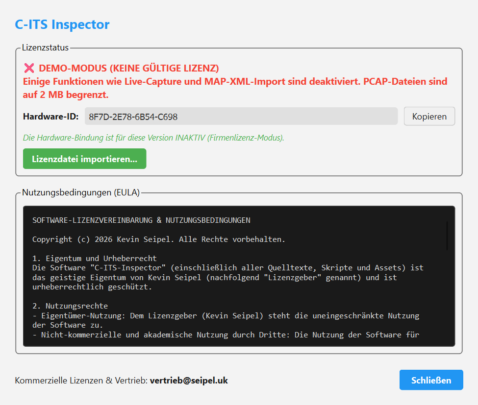
Abb. 1: Lizenzdialog im Demo-Modus mit rotem Warnbanner und Hardware-ID
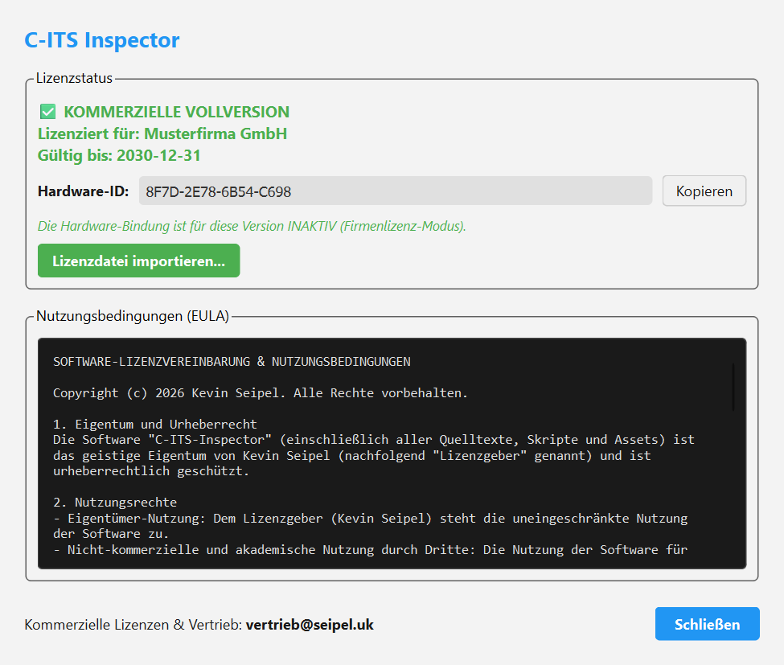
Abb. 2: Lizenzdialog mit erfolgreicher Verifikation und grünem Status
Fehlerbehebung
Häufige Probleme
| Problem | Ursache | Lösung |
|---|
| EXE startet nicht |
Windows blockiert die Datei oder der Programmordner ist unvollstaendig |
Datei gemaess interner Freigabe entsperren; kompletten bereitgestellten Ordner erneut kopieren |
| Karte bleibt leer / grau |
Keine Internetverbindung für Kartenkacheln |
Internetverbindung prüfen; ggf. anderen Kachel-Layer wählen |
| Keine Nachrichten in der Tabelle |
Alle Filter deaktiviert oder keine V2X-Pakete in PCAP |
Filter-Zeile prüfen; Datei auf V2X-Inhalt prüfen |
| Priorisierungsfehler-Panel fehlt |
Keine SREM/SSEM-Nachrichten in der Sitzung |
PCAP mit SREM/SSEM-Inhalt laden |
| ETA-Tab zeigt keinen Graph |
Keine Request/Merge-Spur verfügbar oder keine SREM |
SREM in Filtern aktivieren; andere Spur im Dropdown wählen |
| KML-Export-Schaltfläche ausgegraut |
Noch keine Sitzung geladen |
Erst PCAP importieren |
| Anwendung friert beim Laden ein |
Sehr große PCAP-Datei (> 500 MB) |
Datei aufteilen oder Ladevorgang auf Hintergrundbetrieb warten |
| Wiedergabe stockt / ruckelt |
Hohe Nachrichtendichte oder schwächere Hardware |
Performance-Modus auf Schonend oder Diagnose setzen
(siehe Performance-Modi) |
| Karte friert kurzzeitig ein |
Pan/Zoom oder Resize während laufender Wiedergabe |
Kurz warten — Catch-up-Flush spielt nach Interaktions-Ende automatisch nach |
Hinweis [map.reload] in der Statusleiste |
Drei Stalls innerhalb 60 s erkannt |
Auto-Recovery hat die Map neu geladen — kein Eingreifen nötig |
| Map dauerhaft leer trotz Reload |
Render-Pipeline-Crash oder fehlende GPU-Beschleunigung |
Anwendung neu starten; bei Wiederholung Diagnose exportieren ausfuehren und Bericht weitergeben |
Unerwarteter Fehler
Erscheint ein Fehlerdialog „Unerwarteter Fehler", bitte wenn moeglich
Diagnose exportieren ausfuehren und den erzeugten Bericht
zusammen mit der betroffenen PCAP-Beschreibung weitergeben.
Diagnosebericht erzeugen
Fuer erweiterte Diagnoseinformationen in der Werkzeugleiste
Diagnose exportieren waehlen. Die App schreibt einen
Bericht mit Sitzungsdaten, Kartenstatus und Laufzeitinformationen in den
ausgewaehlten Ordner.
C-ITS Inspector · Benutzerhandbuch fuer die Windows-EXE · Stand 2026-05-28 · SWARCO ITS